Heavy Machinery in Trouble! (Wow Pics)
2011-11-23T19:05:00.003-08:00
 "QUANTUM SHOT" #740 "QUANTUM SHOT" #740Link - article by Avi Abrams "All the king's horses and all the king's men..." can't put these mining trucks together again! This is another installment in our startling and somewhat harrowing series "Heavy Machinery, Trucks and Cranes Accidents" - see Big Rig Trucks Oops! and All Cranes Are Doomed, for example. First, the heavyweights! The heavier they are, the harder they fall: 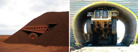 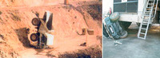 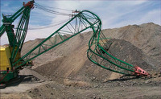 (most images are from little-known forums frequented by miners and heavy machinery operators, and via Mining Mayhem) It seems the escavator above decided to stretch its neck muscle a little. Heavy loads and not-so-careful drivers seem to be the cause of many mining machinery accidents shown below: 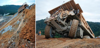 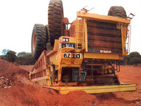  (above: too much heavy work for this CAT-793, image via) Swimming in the mud: 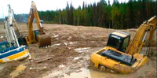 When two heavy 300 ton trucks collide... - 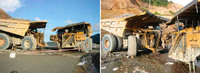 (images via) Look at this cliffhanger!.. Luckily this truck did not fall all the way down - 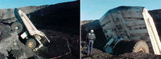 More sticky situations: 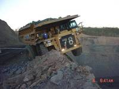 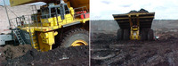 When the entire rear section breaks off - Buried under a huge rock slide: 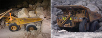 (images via) Driving off the ramp and falling to the ground down below:  (images via) Huge excavator falling sideways (due to a bench failure) at Peak Downs QLD 4744 Mine, Australia: 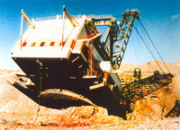 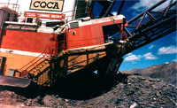 (images via) Pulling a huge dragline "Big Muskie" excavator requires a lot of effort:  (image via) Crushed by a huge truck... all what's left is a "pancake": 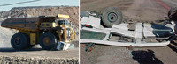 "Smaller fish" still crashes hard Many of these mind-bending accidents and situations happened in East Europe, Russia and China. Not sure why. They do have quite capable machinery and trucks, able to withstand all sorts of adverse conditions. However, perhaps driver's incompetence (or pure drunkenness) is what drives these beautiful machines "over the edge". This KAMAZ is really stuck, though this is an understatement... because what's even more mysterious is how it ended up there?? - 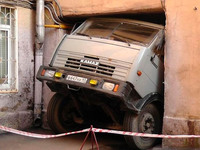 Another KAMAZ, snug in a hole: 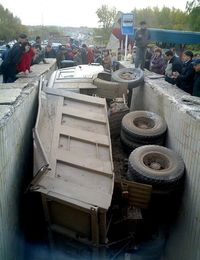 This photo was sent to us by James Mason: 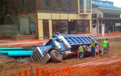 (image via) "Battle of the Giants" with miserable results: 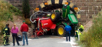 An overpass collapses in Zhejiang, China (more info). Four drivers escape death, trucks suffer damage: 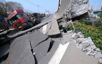 (image via) Another Chinese "Cliffhanger": 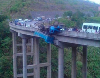 Pretty hard to explain? (the damage seems to be too drastic for just a tree falling over a bus) - 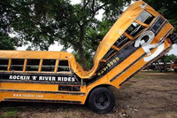 Bridges are also not dependable: this one fell apart in Jilin, Baishan, China - 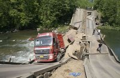 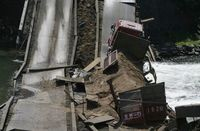 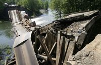 (images via) Classic "Trucks vs. Overhanging Signs" situations: 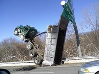 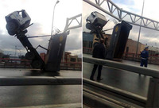 This is pretty sad... two cars totalled with one blow: 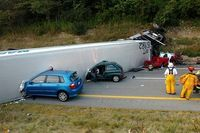 More garbage disposal is needed: This is a definition of "driving by faith". Something invisible is upholding this load, don't you think? - Heavy, heavy losses: 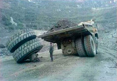 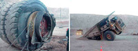 Some trucks can be "happy", or rather made happy with cheerful livery: (read more info about this here) Careful with this load! A 600-ton German church (the most ancient of all the Saxon churches in the south-eastern Germany, built in 1258) was moved by trucks from the village Hoyersdorf in Bornu: 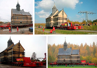  Up, up, and away: 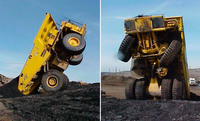 The image above is a pretty legitimate way to unload trucks in some industrial areas. The next one, however, is NOT the way to unload: Crushed by a concrete plant... during the earthquake in Taiwan, more info: 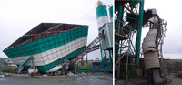 (images via) Ingenious, stubborn drivers pushing their "diehard" machinery to the limits Here, the old tractor serves as an engine for a barge; well, why not? - 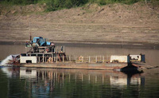 Getting into sports: 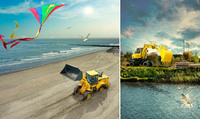 (creative advertisement by Studio Evert-Thiry) "A Little Tractor That Could": 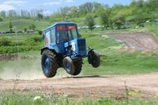 Getting some shade: ... and drinks: 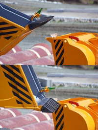 The Photoshop Force is strong with this one (it's cool, though): 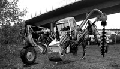 If heavy machinery ever want to get any revenge, here is a good visualization of their revolt: "The Battletruck" (1982), or "Warlords of the 21st Century" (more info) - 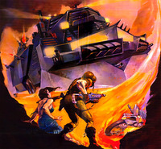 (image via) And, of course, here is one of our favorite movie posters: "White Line Fever" (1975) -  Not sure if we posted this before, but even if we did, this method of loading your tractor on a train is worth mentioning again: 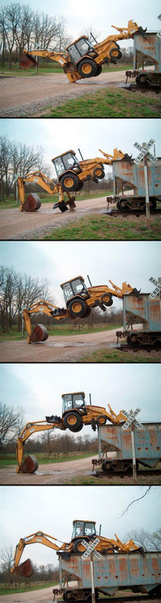 CONTINUE TO OUR "CRAZY ACCIDENTS" SERIES! ->
|